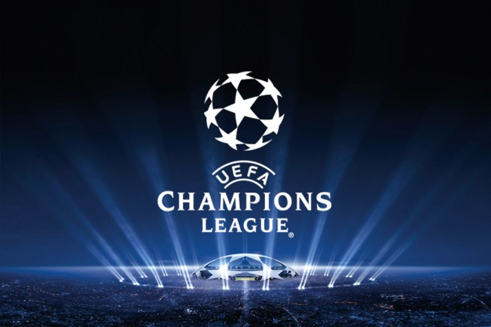

La Liga is the most recognized soccer division in the world. It was founded in 1984 in Spain. The League is divided into two divisions. First and second division. The first division is the most recognized worldwide. It consists of 20 teams.
La Liga is the most recognized soccer division in the world. It was founded in 1984 in Spain. The League is divided into two divisions. First and second division. The first division is the most recognized worldwide. It consists of 20 teams.This project is about Who is the best soccer player, Lionel Messi or Cristiano Ronaldo?!.
Dashboard of the dataLeonel Messi and Critiano Ronaldo are two world-famous soccer players. Since they both started their careers, they have been compared to see who is the best.
La Liga is the most recognized soccer division in the world. It was founded in 1984 in Spain. The League is divided into two divisions. First and second division. The first division is the most recognized worldwide. It consists of 20 teams.
The UEFA Champions League is a competition between the best soccer teams in Europe. The champions league is one of the best known and most prestigious soccer leagues in the world. The champions league happens once a year and Multiple teams from almost every country in Europe play against each other looking for the best team in europe.
During my research, I compared different data, the goals and assists of each player from the champions league and La Liga from 2009-2018. According to my data, Ronaldo is better than Messi.
During the process of finding the best player, I discovered that Messi has far more goals and assists to goals than Ronaldo in each year from 2009-2018 in La Liga. But I also found out that Ronaldo has a lot more goals and assists on goal than Messi in the champions league. I think that Ronaldo is better because he has more goals and assists on goal in the champions league and the champions league is much more competitive than La Liga because there are the best teams and players from many other countries in Europe.